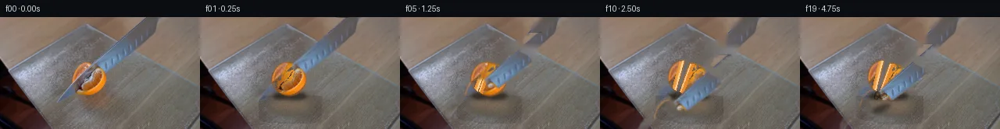

![首帧]()

Round 00
2026-11-05T22:30:25.263385+00:00像素候选变化代码 +401/−0inspection 更新
pixels 636889bf0f7c06b7 · code 6f6c41b3fb5ce6c8
查看本轮 generate.py 真实 diff
--- previous/generate.py
+++ current/generate.py
@@ -0,0 +1,401 @@
+"""PixelWorld-Text case_0042 generator.
+
+Scene: a half tangerine on a glass cutting board; a diagonally held chef
+knife presses through it (sawing slice). The knife tip is at the top of the
+fruit in frame 00 (which is copied byte-content-identical from
+first_frame.png); over 19 more frames the cut completes, the two pieces
+part revealing flesh, the blade reaches the glass and is then lifted.
+
+All pixels are produced with local numpy/PIL/OpenCV operations only:
+threshold masks, inpainting, sprite warping, analytic shading and grain.
+"""
+from pathlib import Path
+import numpy as np
+import cv2
+from PIL import Image
+import artifact_io
+
+ROOT = Path(__file__).parent
+TMP = ROOT / ".tmp"
+TMP.mkdir(exist_ok=True)
+rng = np.random.default_rng(20261106)
+
+H, W = 144, 256
+
+# ---------------------------------------------------------------- geometry
+# tangerine dome
+C = np.array([114.0, 79.5])
+R = 21.6
+# cut chord (frame 0): top point P1 -> bottom point P0
+P0 = np.array([100.0, 96.0])
+P1 = np.array([114.0, 58.0])
+E = (P1 - P0) / np.linalg.norm(P1 - P0) # along chord, upward
+M = np.array([-E[1], E[0]]) # normal, toward body side
+assert abs(M @ np.array([0.0, 1.0]) - 0.346) < 0.02
+
+yy, xx = np.mgrid[0:H, 0:W]
+PX = np.dstack([xx, yy]).astype(np.float64)
+DISK = ((PX - C) ** 2).sum(-1) <= R ** 2
+SVAL = (PX - P0) @ M # signed dist to chord
+
+# ---------------------------------------------------------------- frame 0
+f0 = np.array(Image.open(ROOT / "first_frame.png").convert("RGB"))
+assert f0.shape == (H, W, 3)
+f0i = f0.astype(np.int16)
+R0, G0, B0 = f0i[..., 0], f0i[..., 1], f0i[..., 2]
+lum0 = (R0 * 30 + G0 * 59 + B0 * 11) / 100.0
+
+# orange peel segmentation (same thresholds as the numeric analysis)
+orange = ((R0 > 125) & (R0 - G0 > 28) & (G0 - B0 > 8) & (R0 - B0 > 45)).astype(np.uint8)
+n_o, lab_o, st_o, _ = cv2.connectedComponentsWithStats(orange, 8)
+order = np.argsort(-st_o[1:, 4]) + 1
+body_org = lab_o == order[0]
+wedge_org = lab_o == order[1]
+
+warm_dark = (R0 > G0 + 8) & (G0 >= B0 - 6) & (R0 < 150) & (lum0 < 118) # shadowed peel
+coolish = (B0 - R0 > 6) # steel / board edges
+
+# ---------------------------------------------------------------- knife mask
+blade_poly = np.array([
+ (189, 0), (182, 0), (176, 5), (168, 13), (158, 22), (150, 31),
+ (144, 38), (131, 49), (119, 61), (124, 70), (133, 71), (146, 62),
+ (156, 54), (165, 47), (172, 43), (177, 39), (173, 32), (162, 26),
+ (153, 29), (161, 18), (171, 9), (178, 3),
+], dtype=np.int32)
+poly_img = np.zeros((H, W), np.uint8)
+cv2.fillPoly(poly_img, [blade_poly], 1)
+neutral_steel = (
+ (lum0 > 52) & (lum0 < 208)
+ & ~((R0 - G0 > 18) & (R0 - B0 > 34)) # not warm wall / peel
+ & ~((R0 > 60) & (G0 < 60) & (B0 < 55)) # not deep red-brown shadow
+)
+knife_mask = (poly_img.astype(bool) & neutral_steel)
+knife_mask = cv2.morphologyEx(knife_mask.astype(np.uint8), cv2.MORPH_CLOSE,
+ np.ones((3, 3), np.uint8))
+# fill interior pinholes that survived the colour test
+inside = cv2.dilate(poly_img, np.ones((5, 5), np.uint8)).astype(bool)
+hole = inside & (lum0 < 190) & ~((R0 - G0 > 20) & (R0 - B0 > 40)) & ~knife_mask.astype(bool)
+hole = cv2.morphologyEx(hole.astype(np.uint8), cv2.MORPH_OPEN, np.ones((3, 3), np.uint8))
+knife_mask = (knife_mask.astype(bool) | hole.astype(bool))
+knife_mask = cv2.dilate(knife_mask.astype(np.uint8), np.ones((3, 3), np.uint8), iterations=1)
+
+# knife cast-shadow sliver on the glass (moves with the knife)
+shadow_line = np.array([(110, 56), (103, 63), (95, 73), (86, 83), (78, 93), (71, 106)], np.int32)
+ksh_mask = np.zeros((H, W), np.uint8)
+cv2.polylines(ksh_mask, [shadow_line], False, 1, thickness=5, lineType=cv2.LINE_AA)
+ksh_px = (ksh_mask.astype(bool)
+ & ~((R0 - G0 > 16) & (R0 - B0 > 30)) # no warm peel / wall
… diff truncated; 314 more lines …